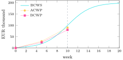

Definition
| Metric | Name | Meaning |
|---|---|---|
| BCWS | budgeted cost of work scheduled | planned value of work that |
| (planned value, PV) | should be done by now | |
| BCWP | budgeted cost of work performed | budget value of work actually |
| (earned value, EV) | done | |
| ACWP | actual cost of work performed (AC) | cost actually incurred |
CV > 0 / CPI > 1 → under budget; SV > 0 / SPI > 1 → ahead of schedule. Control watches T (progress vs plan, milestones), R (allocation vs plan), C (BCWS, ACWP, BCWP), Q (conformance, defects, rework).
Worked example
At week 10: planned work worth 100,000 (BCWS); work done worth 80,000 at budget (BCWP); actual spend 90,000 (ACWP).
| Indicator | Value | Reading |
|---|---|---|
| CV | 80,000 − 90,000 = −10,000 | over budget |
| SV | 80,000 − 100,000 = −20,000 | behind schedule |
| CPI | 0.89 | 89 cents of value per EUR |
| SPI | 0.80 | 80% of planned progress |
If the total budget (BAC) is 200,000 and efficiency stays the same, estimate at completion . Comparing actual costs with planned expenditure alone ("we spent 90 vs 100 planned, so we are fine") would be misleading: earned value shows the project is both late and over budget.
Pitfall
Comparing ACWP with BCWS mixes schedule and cost effects. BCWP needs an honest measure of physical progress.
Recall
Define the three metrics; compute CV, SV, CPI, SPI for the example; explain why "spent less than planned" can be bad news.
Picture

At week 10 earned value (80) lies below both plan (100) and actual cost (90).